Objective
To analyse and investigate a potential SQL injection attack detected by the Security Information and Event Management (SIEM) system, understand how such payloads are crafted and identified, and apply appropriate response actions to mitigate the threat and prevent future occurrences.
Investigation steps
Reviewed the alert and created a case from the alert flagged in the investigation channel
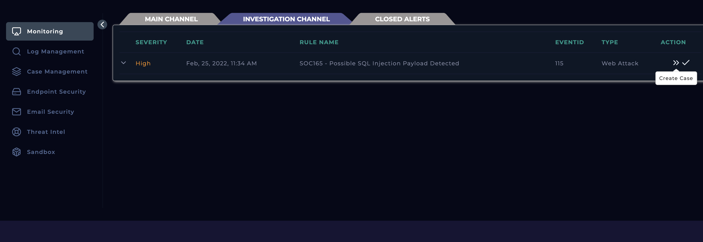
Started the playbook, to follow incident response procedures for this alert to investigate whether true-positive or false-positive.
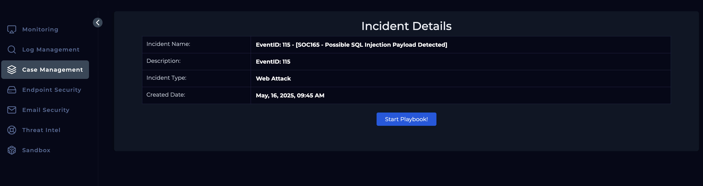
To analyse what was the trigger for the alert to be generated, returned back to the alert and can see the rule name being Possible SQL Injection Payload Detected and the alert trigger reason being Requested URL Contains OR 1 = 1
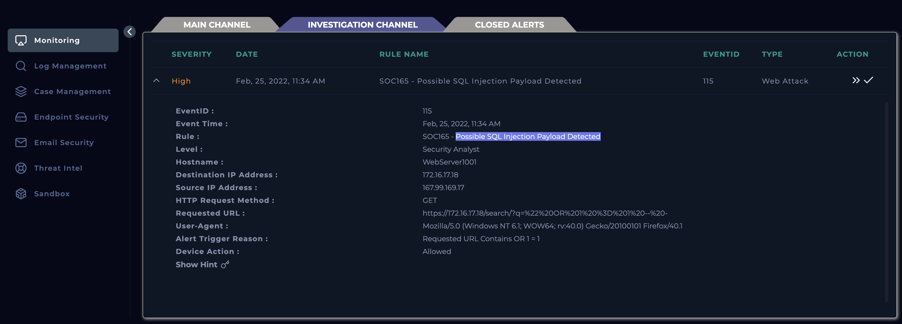
To understand a bit more about the requests sent, headed over to the log management and filtered results by the source ID specified in the alert, which shows the protocol and request that was sent. While examining the Request URL, it became apparent that an SQL injection was taking place as the decoded URL meant https://172.16.17.18/search/?q=" OR 1 = 1 -- - (Decoded with the assistance of https://www.urldecoder.org/)
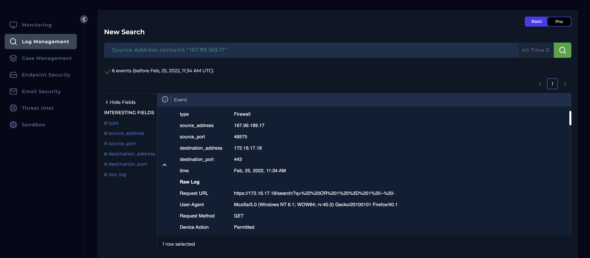
Examining the rest of the log, I could see multiple requests were sent by the same source IP and they all had SQL injection within their requests.
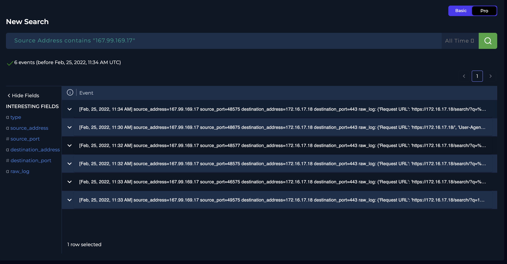
To identify the ownership of IP addresses, navigated to the end point security and searched for the IP addresses. This shows 172.16.17.18 is an internal server that was receiving requests from an external device with an IP of 167.99.169.17.
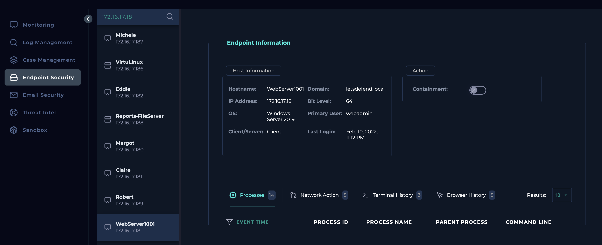
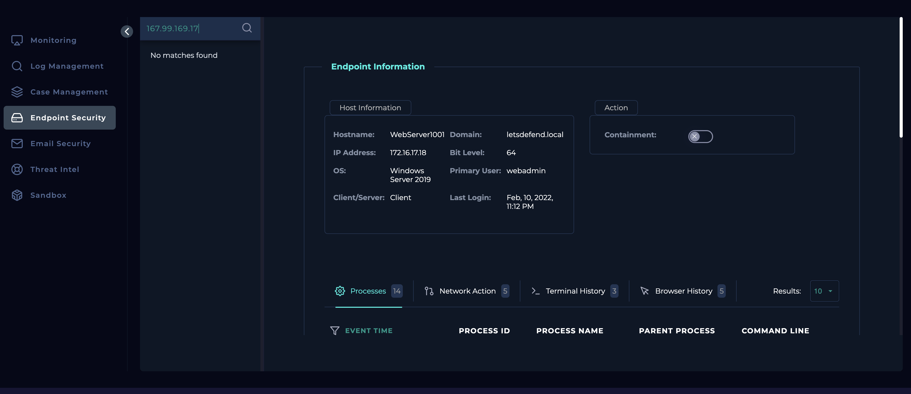
Checked the source IP in Virus Total which showed 4/94 vendors flagged this IP as malicious – relating to phishing.
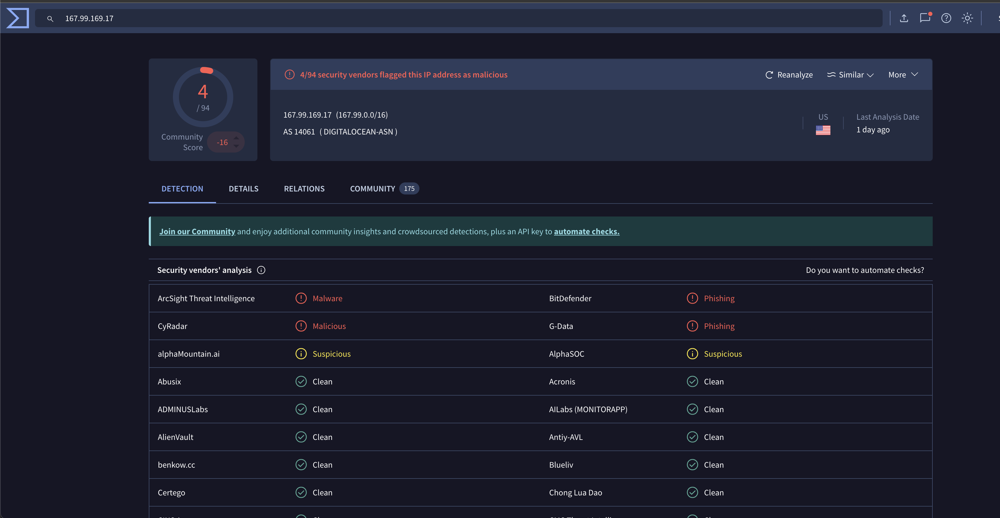
Checked the Source IP address against AbuseIPDB, but abuse confidence was said to be 0% which reassures that there is no reason to suspect it is malicious, although it had been reported around 15,000 times. In addition, I was able to find additional details like who’s IP address it is, and it became apparent that the IP address belongs to Digital Ocean.
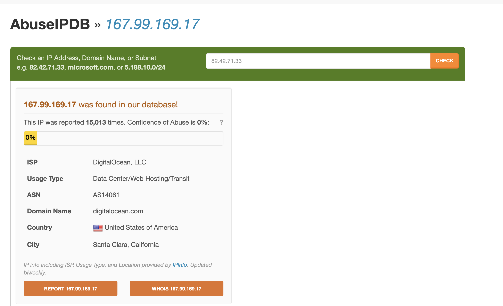
Checked the email security module to ensure this wasn’t a planned test by looking out for emails mentioning this, and it seems like there wasn’t any.
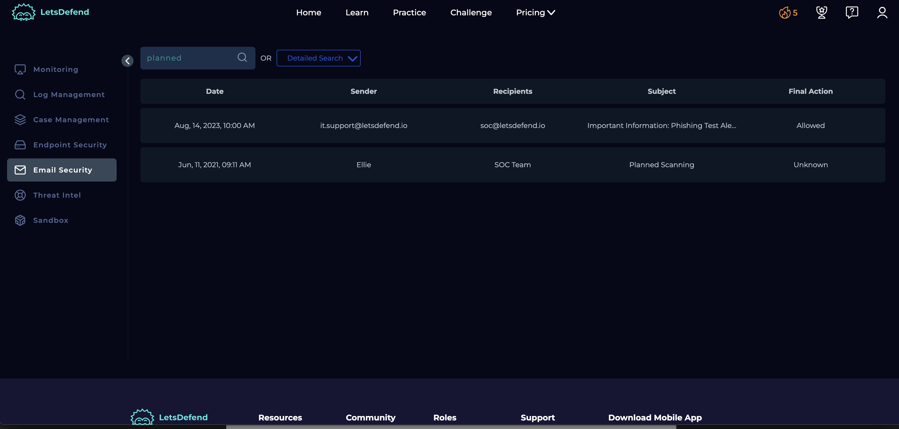
Exploring the log further of the requests made by the client, it has become apparent that the HTTP response given was 500 – Internal Server Error, therefore the server has not processed the request.
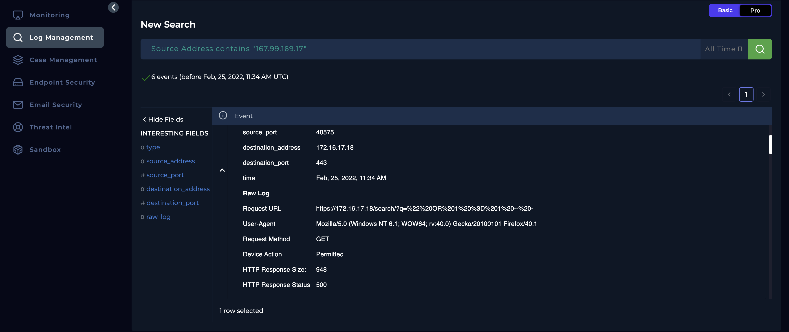
Closed the case deeming the attack was not successful due to the server providing HTTP response code of 500.
Analysis
An external actor from IP address 167.99.169.17 conducted a series of SQL injection attempts targeting an internal web server at 172.16.17.18 over port 443 (HTTPS). The requests were sent using an outdated Firefox browser version (40.1), indicating a potential attempt to evade detection by mimicking legacy traffic or outdated clients.
The attack vector consisted of classic SQL injection patterns such as:
?q=" OR 1=1 --
This specific pattern attempts to manipulate backend SQL queries by injecting a tautological condition (1=1), which is known to bypass poorly secured authentication or search filters.
Each attempt resulted in an HTTP 500 response, indicating the server encountered an unhandled exception—likely due to a failure in input sanitization or application logic when processing the malicious query.
Although the IP address involved has not been positively flagged by threat intelligence databases (Virus Total and AbuseIPDB, the behaviour recorded in this event—combined with multiple SQLi payloads and a pattern of HTTP 500 responses—indicates an active exploitation attempt. Preventive actions are advised to mitigate future risks and potential compromise.
Key learnings
- Gained practical experience in identifying and analysing SQL injection (SQLi) attack patterns, including the use of tautological payloads like ‘OR 1=1 --' to bypass input validation.
- Learned how attackers may use outdated browser versions (e.g., Firefox 40.1) to evade detection by mimicking legacy traffic.
- Developed the ability to correlate HTTP response codes (e.g., 500 Internal Server Error) with potential backend failures caused by unsanitized user input.
- Strengthened skills in leveraging threat intelligence platforms like VirusTotal and AbuseIPDB to assess the reputation of suspicious IP addresses.
- Understood the importance of input validation, secure coding practices, and proper error handling in preventing exploitation of web applications.
- Recognized when to escalate incidents based on behavioural patterns and indicators of active exploitation—even in the absence of threat intelligence flags.